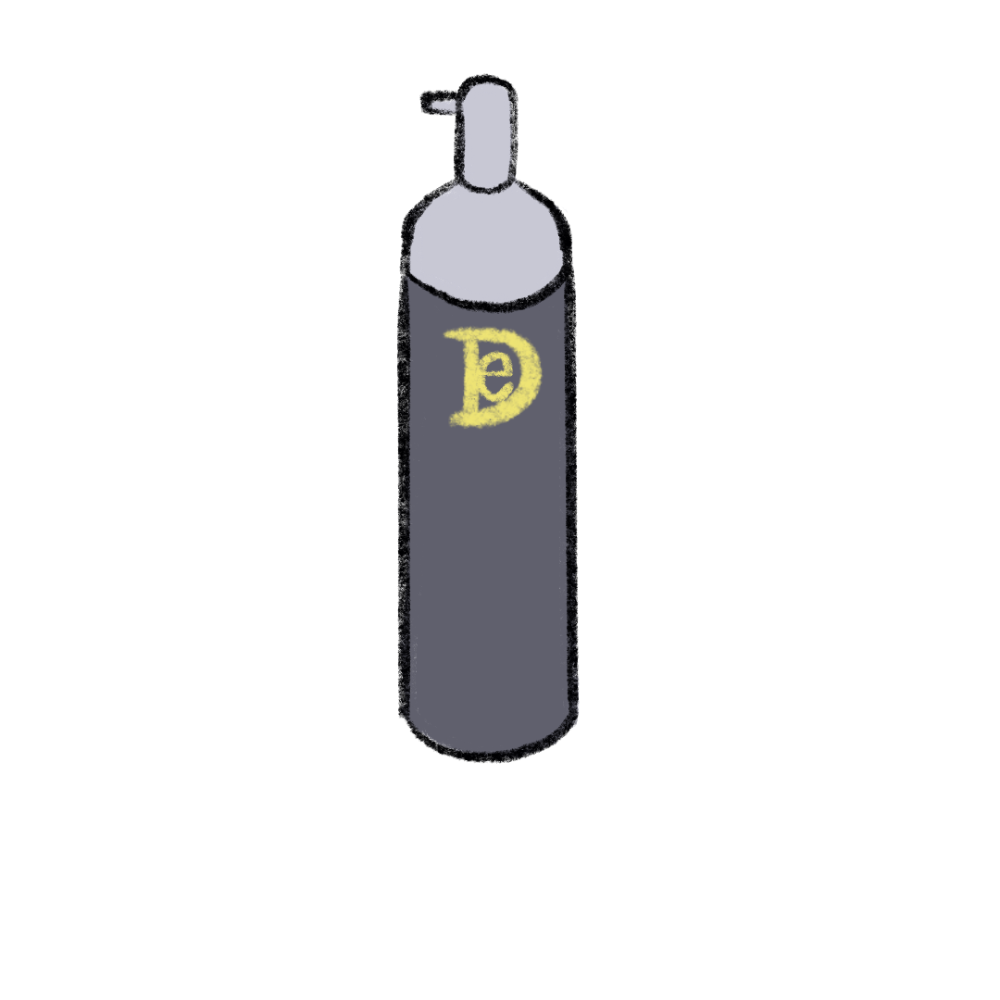
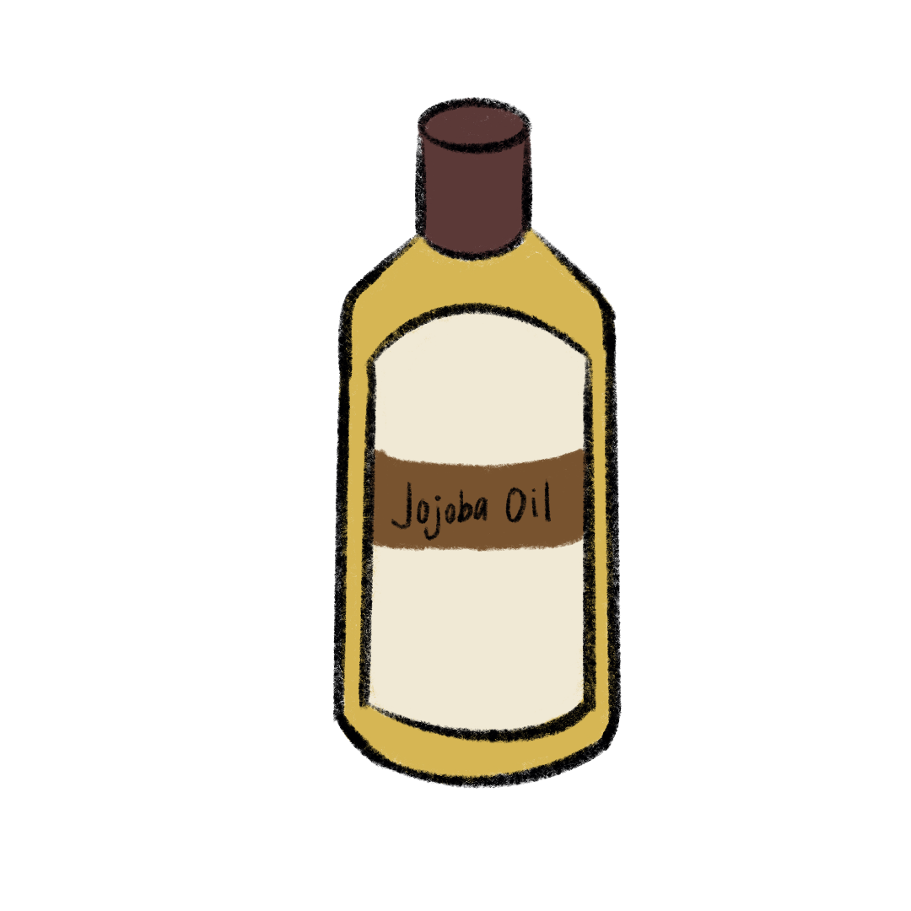
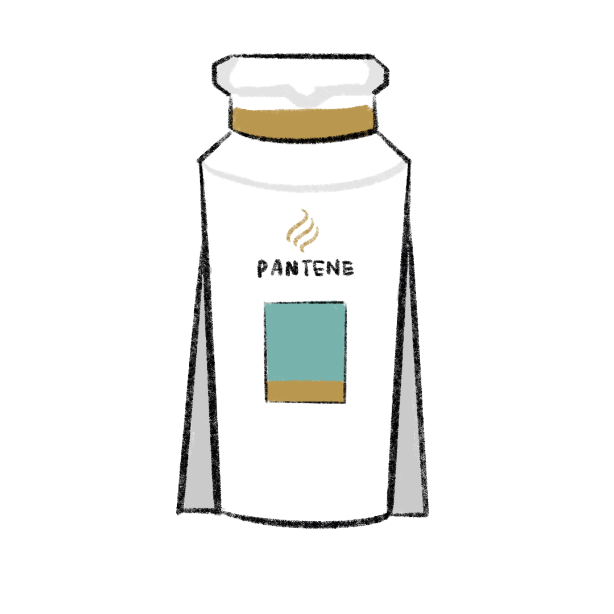
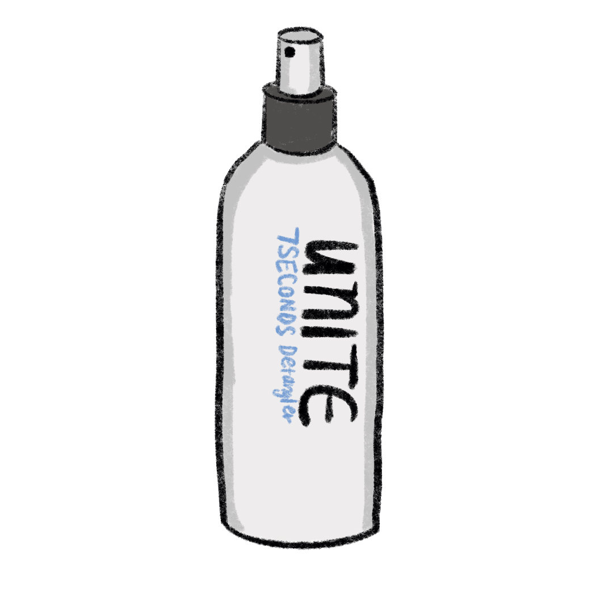
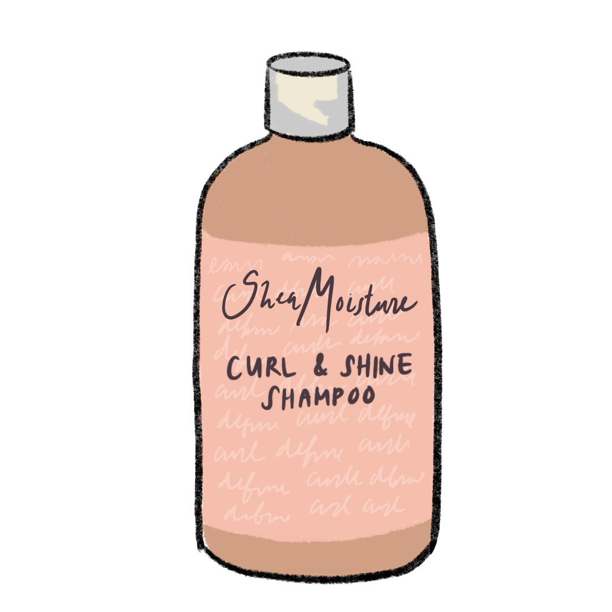
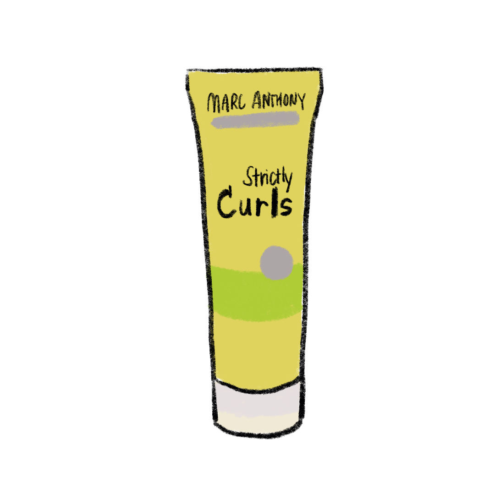

Curly hair comes in many different textures and shapes and is often an integral part of one’s identity. People can be born with curly hair, but some can have straight hair that eventually curls with age, leaving them ashamed or insecure of how their hair differs from their peers. Choosing products can be a tricky and costly process that involves spending money and trial and error of various products in order to find the routine that best fits one’s individual style. For many, learning to embrace their natural curls and how best to take care of them is a continuous journey.
Lilliana Castillo’s hair started to get really curly after she hit puberty. The SESP second-year was initially confused at the change because no one else in her immediate family had such curly hair. She was on her own.
“At first, I had no idea how to take care of it properly. I would use a straightener on my bangs and then leave the rest of it curly, but brush it out while it was wet, and put no product in,” she says. “It just looked like a whole mess. I looked like Hermione Granger.”
When Castillo reached eighth grade, she decided to start learning how to take care of her hair because she became tired of it looking frizzy.
“I learned mostly through YouTube since I didn’t have anybody else in my life to teach me,” she explains.
One of the YouTubers Castillo learned from was Curly Penny. A crucial step in learning about her curls was discovering her curl type by using a chart that classified hair using a number one through four and a letter: A, B or C. Castillo identifies her hair as 3A, with the number designating hair shape and the letters describing the width of the curls. An A curl has the largest width, and C is the smallest curl width. The number one is associated with straight hair and becomes more curly, ending at number four, described as “coily.”
After discovering her curl type, it became easier to try products, like leave-in conditioners and curling creams, and to try hair routines that curl influencers with her curl pattern used. However, a downside to relying on social media to learn about her hair was that she was not always given the best advice.
“I thought at first I have to buy expensive products in order to have good curly hair, but I've learned what works for me,” Castillo says. “I use drugstore products, and it works. It basically is just like trial and error.”
Castillo went through at least 10 different products before she became satisfied with her current routine: Kinky-Curly Knot Today, Design Essentials Mousse and Jojoba Oil.
While it was always hard to find the right products at home in Chicago, living in Evanston added a different problem: more expensive products. Castillo found products at Walgreens to be too expensive, so she has to find the same ones at Ulta to buy them at a more affordable price. However, Castillo is grateful that she even is able to find products for her curl type in Evanston.
“I’m grateful for the resources I have, because I know a lot of Black women who have tighter curl patterns do not have the resources to get products in Evanston,” she says.
Castillo, being a person of color herself, understands the experience well.
“I’m Cuban, and I had a Cuban friend who also had curly hair like me. We both struggled to find products, even at home,” she says.
After many years of learning about her curls and restoring their natural pattern from years of bleach and heat damage, Castillo now sees her hair as a crucial part of her identity.
“I really wanted straight hair when I was younger. I even considered getting a keratin treatment to keep my hair straight,” she says. “But then I was like ‘you know what, this is such a unique aspect of my identity. You can do so much with curly hair, and it truly is beautiful.’ So I’ve made it an integral part of my identity to take care of my hair and have fun with it.”
Julia Richardson, a Medill second-year, had a very different experience. She was born with curly hair and her mom had a similar hair type, so she has mostly followed her mom’s curly hair routine with her own curls. When she was younger, she would wear her hair in many different hairstyles: an updo, braids, pigtails – anything but down.
“I remember I had crazy hair day in first grade, and my crazy hairstyle was just wearing my hair down,” Richardson says.
As she got older, she started wearing her hair down more often and working on growing it out longer. After learning what good hair days were for her, she was always surprised when people couldn’t notice the differences in her hair.
“In high school, I said to my friends, ‘My hair looks bad,’ and they’re like, ‘It looks the same everyday,’” she says. “You notice differences when it’s your own hair. Sometimes it’s just more curled up.”
Richardson has had many positive interactions with regards to her hair. Many people with curls dislike it when people pull down on their curls to watch them bounce back up, but she finds those interactions funny. She finds it interesting how fascinated people get when they see curly hair because they often act as if they’ve never seen it before.
“One time I was a counselor at summer camp and I had just washed my hair, so it was down. One of the kids, she was so sweet. She was like, ‘Oh my god, your hair is amazing.’ She was so in awe about it,” Richardson says.
Richardson has remained pretty consistent with which product she uses for her hair routine, only experimenting with about three other choices. She currently uses Pantene shampoo and conditioner and a Unite 7 Seconds Spray after she gets out of the shower. The most crucial part of her hair routine is combing her hair in the shower or while it’s still wet to minimize frizz.
Because she purchases most of her products through Amazon, the transition of moving from her hometown of Redlands, California to Evanston was not drastic. California has very dry heat, so Richardson only notices the differences when it rains and becomes more humid, causing more frizz to form.
Although she doesn’t base her whole identity off of her hair, she recognizes that it is a noticeable part of her appearance and how people would first describe her. She has had fun with it, making puns about her hair and her image.
“I ran for Executive Secretary when I was in high school. I made a poster ‘No One Can Compare to the Girl with the Curly Hair’,” she says.
Margo Milanowski always had curly hair, but she has gone through a long journey of learning about her hair and tailoring her routine to produce the best results. Milanowski’s entire family has curly hair, so when she was younger, the Medill third-year learned from her mom, using whichever products she used. However, she still found it difficult to control her hair and ended up disappointed with some of the results.
“The only time it looked nice was if my mom was doing something to it. I did really stupid stuff when I would get out of the shower where I would immediately part it and then brush it straight,” Milanowski says. “It just ended up looking super flat, and I wasn’t confident in myself. Finally I was like, ‘OK, I’m going to figure this out because I want to make it look better.’”
She decided to take initiative in learning about her hair when she reached eighth grade. Since her curls had finer ringlets than her mom’s, identifying as a 3A/3B type, she turned to YouTube for answers. She found YouTuber Carrie Hope Fletcher to help guide her into the intimidating world of curly hair care.
One useful tip was to not wash her hair everyday. However, since Milanowski was a competitive swimmer, she was never able to implement this advice until she came to college. When she did, she noticed great results.
“It bounces up more and doesn’t have a strict feeling to it,” she says. “I feel like when I overwash, it gets dry and stringy and brittle.”
Since starting her curly journey when she was 14, Milanowski has tried at least four different shampoos and conditioners and over a dozen different curl products. She rejected some products, like Paul Mitchell mousses, because they were crunchy and heavy, or DevaCurl, because it was too expensive and had an aggressive hold on her hair.
“I do appreciate now in the past five or 10 years, curls have become a lot more popular. There weren’t nearly as many products when I was growing up,” Milanowski says. “I think there was stigma, even from my own family, which is some of the limitations of me learning how to care for my hair.”
This is Milanowski’s current curly hair routine: She washes her hair two to three times a week using the SheaMoisture Coconut and Hibiscus shampoo and conditioner. She uses a Garnier Intensive Treatment once a week or once every other week. Then she brushes through her hair immediately after getting out of the shower while it’s still soaking wet and dries it using a T-shirt because a regular towel is damaging to the curls. Afterwards, she puts in the Marc Anthony Strictly Curls Envy Curl Cream using a combination of the raking and prayer hands methods. Finally, she puts her hair in a plop by using the T-shirt to form a headwrap around the curls to protect them while they dry.
Although Milanowski appreciates being able to find her products fairly easily in Evanston, she has noticed an increase in prices of the products she used back home in Grand Rapids, Michigan.
“I can go to my Target at home and the SheaMoisture is $8.99 or $9.99, and here it’s $11.99, maybe $12.99,” she says.
Milanowski recognizes that many brands markup the cost of curly hair products because their consumers have no other choice to achieve the consistent looks they want. She has personally spent over $200 on hair care so she has to cut out products, like DevaCurl, that become too expensive to be included in the weekly routine.
Overall, Milanowski is satisfied with the active effort she put in to learn about her hair and to be proud of it, shaping her identity and individuality.
“When I would go to school with my straight hair, I would get tons of compliments. People would be like, ‘Oh my gosh, that looks beautiful. You should do this everyday,’” she says. “That always made me feel weird because I was like, ‘I like my curly hair.’”